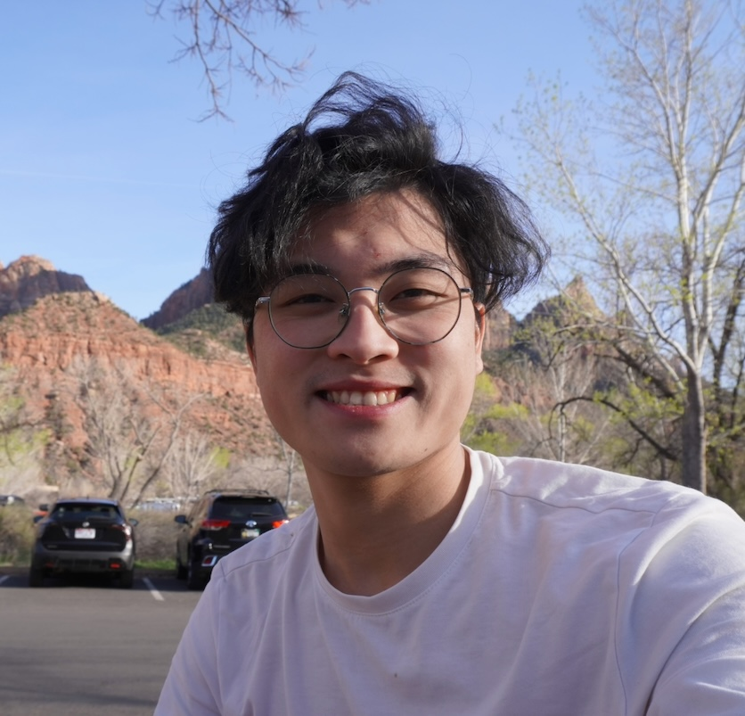
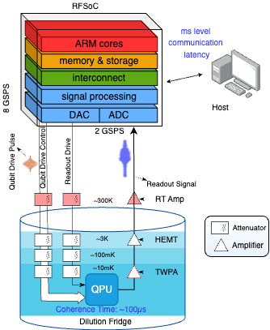
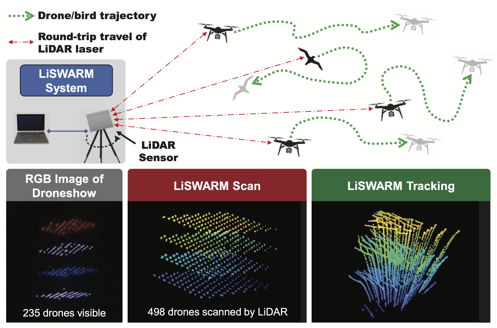
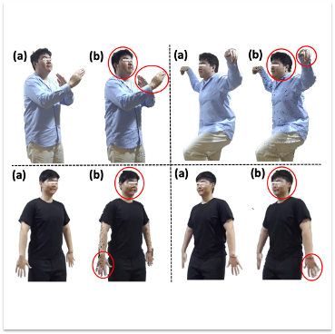
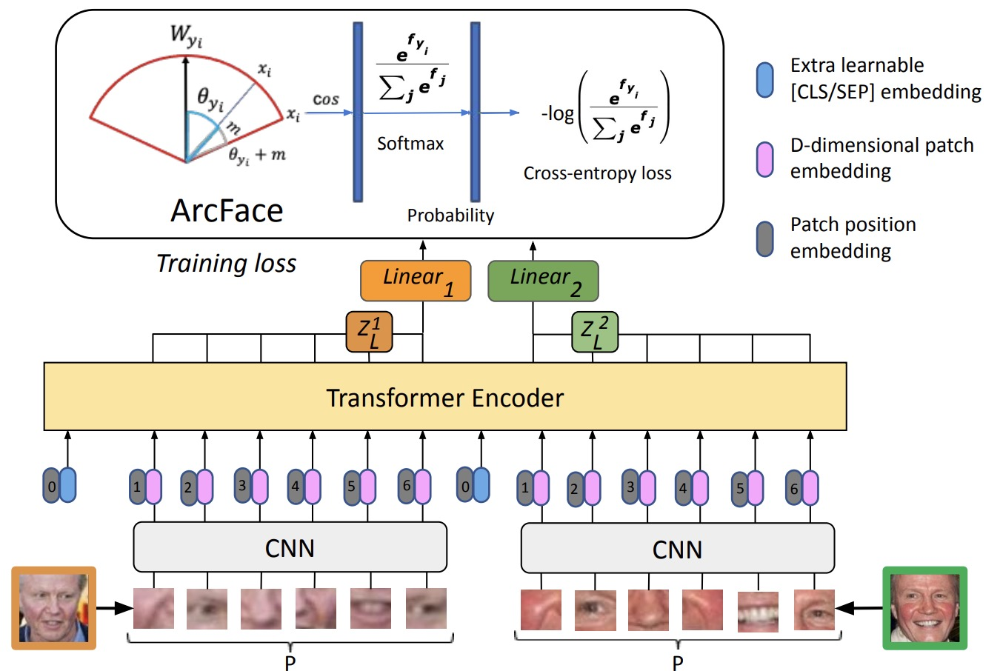

|
Vu Le
I'm a third-year Computer Science PhD student at the
University of Massachusetts Amherst (UMass),
working with
Prof. VP Nguyen and
Prof. Deepak Ganesan.
I am also an affiliated PhD student at
Lawrence Berkeley National Laboratory,
where I work on heterogeneous computing for deep learning-based quantum state classification
with sub-microsecond (1 μs) latency, hosted by
Yilun Xu.
I am broadly interested in heterogeneous computing — combining AI engines, FPGAs, CPUs,
and GPUs to solve computational problems with critical timing requirements. My research sits at
the intersection of hardware-software co-design, real-time machine learning inference, and
scalable systems for scientific and edge applications.
I am actively seeking research or industry internships in the US for Summer/Fall 2026,
particularly in AI, edge computing, heterogeneous computing, and high-performance AI.
Feel free to reach out!
My CV will be available upon request.
Contact:
- Personal email: vule20.cs AT gmail [DOT] com
- UMass email: vdle AT cs.umass [DOT] edu
- Berkeley Lab email: vule AT lbl [DOT] gov
Scholar /
Github /
LinkedIn /
Twitter / X /
Photos
|

|
News
- 03/2025: One paper accepted at ACM QSys 2025 (in conjunction with ACM MobiSys 2025).
- 03/2025: One paper accepted at ACM MobiSys 2025.
- 02/2025: I’m honored to receive the James Kurose Scholarship in Computer Science.
-
01/2025: I open sourced
my GitHub repository and tutorials
for the QubiC quantum control system.
-
12/2024: I officially become a research affiliate with
Berkeley Lab.
- 09/2024: My new academic website with the vule.us domain is live now.
-
09/2024: One paper accepted at
ACM SenSys 2024.
- 09/2024: I joined University of Massachusetts Amherst, USA as a PhD student.
- 01-04/2024: I received multiple offers to pursue my CS PhD in the USA.
- 10/2023: One paper accepted at IEEE/CVF WACV.
Show more
|
Selected Research
I'm interested in quantum computing, computer architecture, deep learning, and scalable networked
systems. Most of my research is about computer systems, systems and computer vision applications.
Some papers are
highlighted.
|
|

|
Computing Systems for Superconducting Qubits: Challenges and Opportunities
Vu Le, Neel Vora, Devanshu Brahmbhatt, Yilun Xu, Gang Huang, Phuc Nguyen
ACM QSys 2025
(in conjunction with ACM MobiSys 2025)
paper
An overview of quantum control systems for superconducting qubits, highlighting the importance of
precise control for fault-tolerant quantum computing. This work emphasizes the advantages of
open-source platforms and outlines key research directions, including scalable control,
high-precision readout, and leakage suppression.
|
|

|
Detection and Tracking of Drone Swarms using LiDAR
Tasnim Azad Abir, Vu Le, Endrowednes Kuantama, Pranjol Sen Gupta, Austin Copley, Judith
Dawes, Mohammad Islam, Richard Han, Phuc Nguyen
ACM MobiSys 2025,
(A* conference)
paper
LiSWARM is a low-cost LiDAR system for accurate 3D tracking and recognition of drones in large
swarms. Using point cloud processing, clustering, and neural networks, it achieves up to 98%
accuracy and scales to 15,000 drones—enabling applications in airspace security, drone shows, and
sensitive area monitoring.
|
|

|
MagicStream: Bandwidth-conserving Immersive Telepresence via Semantic Communication
Ruizhi Cheng, Nan Wu, Vu Le, Eugene Chai,
Matteo Varvello ,
Bo Han
ACM SenSys 2024,
(A* conference)
project page /
paper
MagicStream, a first-of-its-kind semantic-driven immersive telepresence system that effectively
extracts and delivers compact semantic details of captured 3D representation of users, instead of
traditional bit-by-bit communication of raw content.
|
|

|
Fast and Interpretable Face Identification for Out-Of-Distribution Data Using Vision
Transformers
Hai Phan, Cindy Le, Vu Le,
Yihui He, Anh Totti
Nguyen
CVF/WACV 2024
(A conference)
project page /
paper
/
code /
poster
/
presentation
Using vision transformers for out-of-distribution data face identification, runs twice faster
while achieving comparable performance with the state of the art DeepFace-EMD model.
|
Miscellanea
Apart from research, I'm an experienced software and DevOps engineer who enjoys building
scalable backend systems. Outside of work, I'm an avid adventurer — I've hiked national
parks across the American Southwest (Grand Canyon, Zion, Death Valley, Horseshoe Bend,
Joshua Tree), hiked the White Mountains in New Hampshire, and traveled across the US with camera in hand.
I shoot with a Sony A6400 and a collection of Sigma and Sony lenses.
Check out my photo gallery.
|
|
{kind=link}